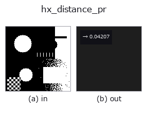

halcon_ext op• 数据种类:region → feature
• 调用:fullseye.apply(img, "hx_distance_pr", a=0.5, b=0.5)(2-D 的模型是一张图 + 两个标量旋钮 a,b∈[0,1])
• HALCON 对应:distance_pr(其含义与参数可参考 HALCON 手册)

*图为在 128×128 合成输入上实际运行的输出。左为输入，右为输出。点云以俯视散点显示(亮度 = z)，一维序列为折线，体数据为沿 z 的最大值投影，视频为中间帧，复数图像为幅值；无法成像的返回值直接显示数值。*
扫描旋钮 a(0.1 / 0.5 / 0.9，另一旋钮取默认):
▸ hx_distance_pr: 旋钮 a 扫描 (文档网站)
扫描旋钮 b(0.1 / 0.5 / 0.9，另一旋钮取默认):
▸ hx_distance_pr: 旋钮 b 扫描 (文档网站)
阶段(前置算子 → 本算子，从左到右):
▸ hx_distance_pr: 处理阶段 (文档网站)
从查询点(归一化 a,b)到 region 的最小距离(feature),用距离变换。
对 v > 0.5 的 region 的补集施加欧氏距离变换(distance_transform_edt),把正规化坐标 (a, b) 处像素的值(该像素到最近 region 像素的距离)除以 max(H, W) 并以 1 饱和截顶后作为 np.float64 返回。
• a → 行 min(int(a*H), H-1)。
• b → 列 min(int(b*W), W-1)。
• region 为空时为 1.0(意为“最大距离”。与 hx_distance_pc 的空=0 相反,需注意)。
查询点在 region 内侧时为 0。距离变换对整幅图像计算,作为 1 个点的查询较重, 但值是严格的像素间距离(不是 hx_distance_pc 那样的顶点近似)。只需判断是否包含时用 hx_test_region_point。
• 示例数据目录(下载 URL / 许可证) —— 2-D 用 skimage.data(BSD/公有领域)加合成图,3-D 给出真实数据源(Stanford/PDS 等)的下载 URL。
• 算子来历与参考文献 —— 该算子族所依据的研究/方法出处。
• 算法的正典(作者、年份)与用途见上面的族使用指南。
下面的程序已确认可以运行(与图相同的输入)。在 Studio 帮助中，此块会变成按钮，可当场加载并运行。
threshold 0.50 0.50 hx_distance_pr 0.50 0.50
• gallery2d_halcon_ext — py -3.11 examples/gallery2d_halcon_ext.py
feature 作为输入)halcon_ext)hx_gen_circle · hx_gen_ellipse · hx_gen_rectangle2 · hx_gen_checker_region · hx_gen_grid_region · hx_gabor · hx_fit_surface1 · hx_fit_surface2
*Provenance: ops.py — 2D 算子登记表。本条目由 tools/opdocs.py md 自动生成(请勿手工编辑)。*
© 2026 Kazufumi Furuse — Fullseye operator documentation. Licensed under Apache-2.0.